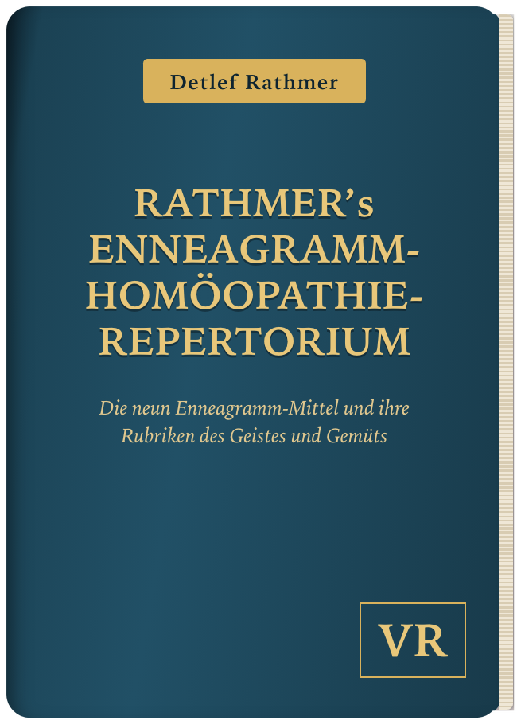
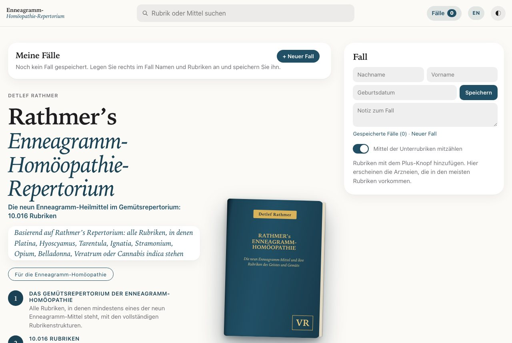
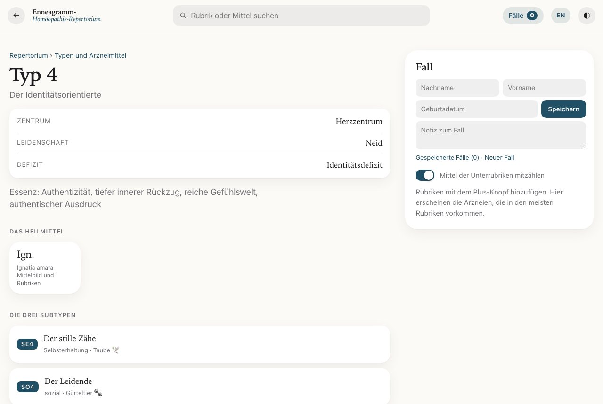
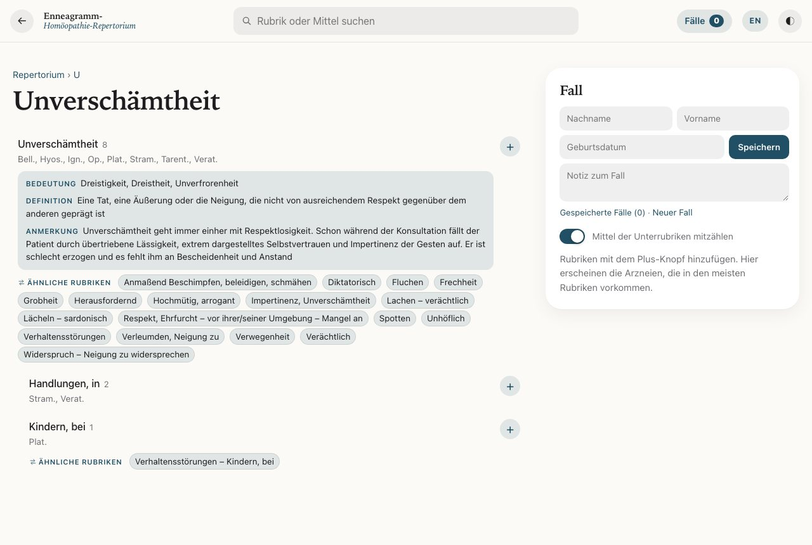

Die App für die Enneagramm-Homöopathie
Rathmer’s Enneagramm-Homöopathie-Repertorium
Die neun Enneagramm-Heilmittel im Gemütsrepertorium – als App, die auf jedem Gerät läuft: Rechner, Tablet und Handy.
Die App für die Enneagramm-Homöopathie
Die neun Enneagramm-Heilmittel im Gemütsrepertorium – als App, die auf jedem Gerät läuft: Rechner, Tablet und Handy.

10.016 Rubriken mit den neun Enneagramm-Heilmitteln Platina, Hyoscyamus, Tarentula, Ignatia, Stramonium, Opium, Belladonna, Veratrum und Cannabis indica. 2.806 davon mit Bedeutung, Definition oder Anmerkung, über 700 ausführlich kommentiert. Dazu Typenseiten, Querverweise und eine Fallfunktion zum Repertorisieren. Verfügbar auf Deutsch und Englisch.
Einführungspreis € 79,50 für die ersten Monate, danach € 99,50. Einmalige Zahlung, kein Abo. Zugang ohne Ablaufdatum, Verfügbarkeit mindestens 5 Jahre garantiert.
10.016 Rubriken, in denen mindestens eines der neun Enneagramm-Mittel steht, mit der vollständigen Rubrikenstruktur. Die Mittelzahl in den Listen zählt nur diese neun.
Bei 2.806 Rubriken stehen Bedeutung, Definition oder Anmerkung direkt dabei, bei über 700 davon ausführlich. So wird klar, was eine Rubrik wirklich meint, bevor sie gewählt wird.
Die neun Enneagramm-Typen mit je drei Subtypen, umschaltbar nach Typ oder nach Mittel, dazu Mittelbilder zu Platina, Hyoscyamus, Tarentula, Ignatia, Stramonium, Opium, Belladonna, Veratrum und Cannabis indica.
„Siehe unter“ und „Ähnliche Rubriken“ aus dem Buch sind anklickbar. Keine passende Rubrik mehr übersehen.
Rubriken wählen, die Arzneien erscheinen nach Häufigkeit. Fälle speichern, Name und Notizen ergänzen, als PDF drucken.
Alle Rubriken, Anmerkungen und Typenseiten gibt es in beiden Sprachen, umschaltbar mit einem Tipp.
Im Browser auf Windows, Mac, iPhone, iPad und Android, ohne Installation. Hell oder dunkel, und auf den Home-Bildschirm gelegt öffnet sie sich wie eine App.



Zum Ausprobieren gibt es die Gratis-Probe des großen Repertoriums mit gleicher Oberfläche: fünf große Rubriken (Angst, Traurigkeit, Zorn, Reizbarkeit und Weinen) und zehn Polychreste, mit allen Funktionen. Ohne Anmeldung, ohne Kosten.
Tipp: In Safari auf „Teilen“ → „Zum Home-Bildschirm“ tippen, dann öffnet sie sich wie eine App.
Wer auch andere Arzneien repertorisieren möchte, findet in Rathmer’s Repertorium alle 27.981 Rubriken mit 500 Mitteln und einen Schalter für die Enneagramm-Homöopathie.
Das Repertorium ist ein Nachschlagewerk speziell für Homöopathen. Es ersetzt keine Diagnose und keine ärztliche oder heilkundliche Behandlung.